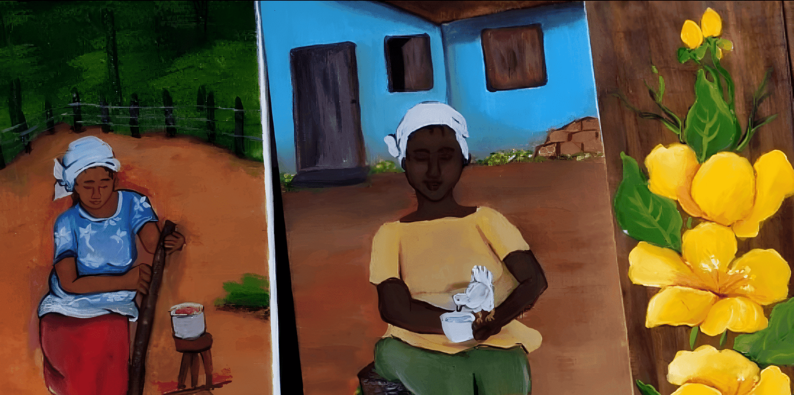
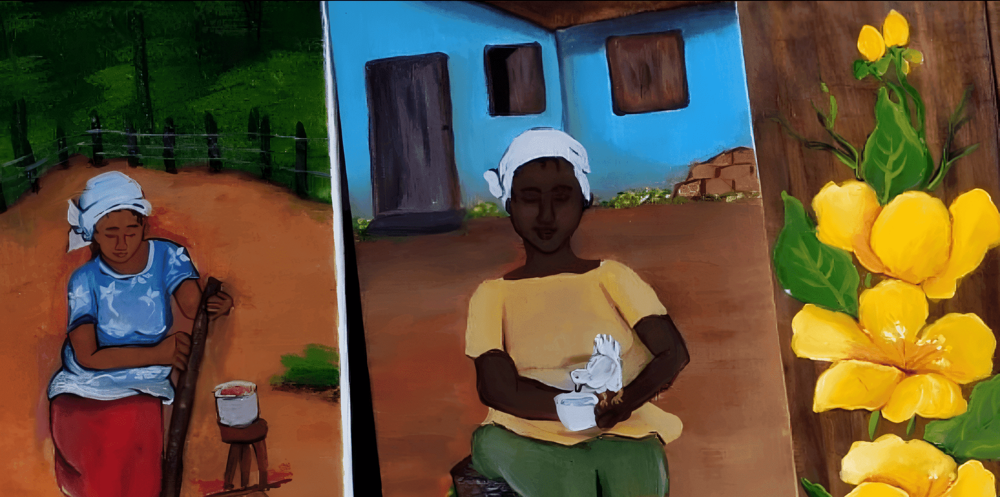

Conheça meu Trabalho
Quem sou?
Sou uma artista autodidata, sem formação na área de pinturas. Tenho ensino médio completo e sou uma apaixonada pela pintura, que acredita que podemos fazer qualquer coisa, basta ter dedicação e vontade.Desenvolvi minhas próprias técnicas de pintura e, assim, consigo passar para os meus alunos uma forma mais fácil e prática de começar a pintar.
Vejo a pintura como terapia e fonte de renda. Para muitos que vivem em situação de extrema pobreza, pode ser uma alternativa para mudar de vida.
Propósito
Meu objetivo é levar a pintura em madeira para as pessoas que estão sem perspectivas ou que buscam experiência nesta área. Por ser um material acessível a todos, podem dar continuidade em casa por conta própria. Podem fazer para vender ou decorar suas casas.